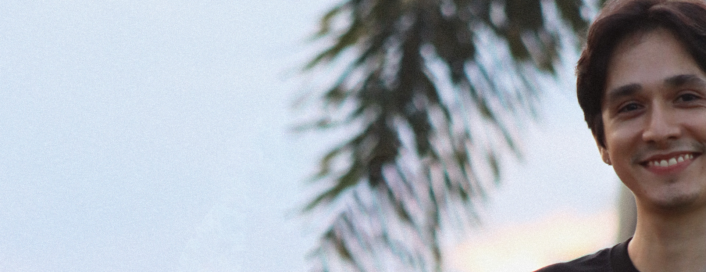

MINHA HISTÓRIA
PROJETOS

World of Warcraft: o Fenômeno que Revolucionou uma Geração
Atuei como diretor, roteirista, ator e editor em meu documentário autoral World of Warcraft: o Fenômeno que Revolucionou uma Geração. Este projeto foi um experiência completa de produção e gestão audiovisual.

Design Gráfico: Logomarca - Katana Code
Criei a identidade visual da minha marca pessoal, © Katana Code, unindo elementos orientais e tecnologia em um design moderno, marcante e minimalista.
Desenvolvedor, Designer Gráfico e Criador de Conteúdo. Bem-vindo ao meu portfólio.